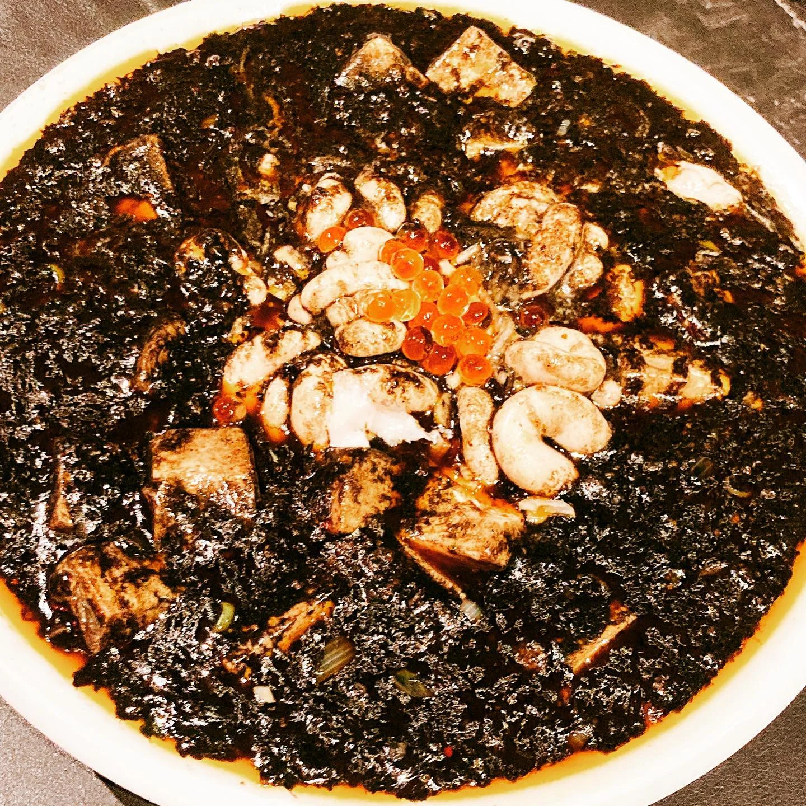

2020年12月8日
イクラ！イクラ！イクラ！

イクラ！イクラ！イクラ！ いいえ！ラー油の玉ですよ！ オープン当初からやってきた 『海鮮BLACKマーボー！！』 ラー油で作った玉のせます！！ ほんで、期間限定で390円で白子100gトッピングできます！！ コロナ禍の世の中、 ゆったり営業してます！ お待ちしてまーす🍺 #白子 #白子麻婆 #麻婆豆腐 #今度TVにでるけんね #マー活 #中華バル#中華#中華料理#福島区グルメ#路地裏#B級グルメ#中国#チャイニーズ#路地裏チャイニーズ有馬#有馬#シュウマイ#餃子#点心#フォローミー#followme#summer